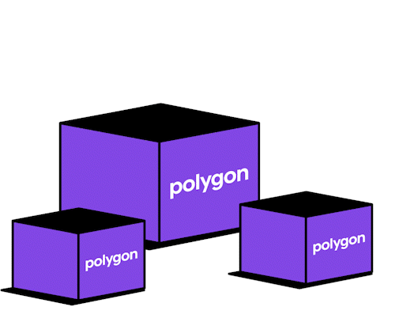

¡ Ecosistema !
¡ Ecosistema !

¿Qué es Polygon (MATIC)?
Polygon transforma eficazmente Ethereum en un sistema multicadena completo (también conocido como Internet of Blockchains). Este sistema de cadenas múltiples es similar a otros como Polkadot, Cosmos, Avalanche, etc., con las ventajas de la seguridad, el ecosistema vibrante y la apertura de Ethereum.Polygon (anteriormente Matic Network) es una solución de escalado de capa 2 respaldada por Binance y Coinbase. El proyecto busca estimular la adopción masiva de criptomonedas resolviendo los problemas de escalabilidad en muchas cadenas de bloques.
¡ Quiero saber mas !